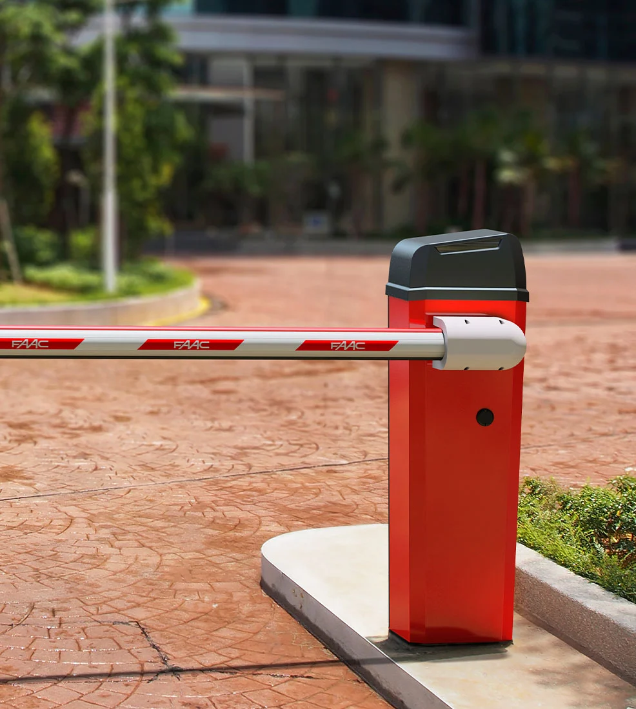

Barrera electromecánica para pasos hasta 5 m a 24 V.
FAAC B614 está diseñada para garantizar la máxima seguridad durante el funcionamiento, gracias al motor electromecánico con codificador integrado.
Este sistema detecta con precisión posibles obstáculos y activa automáticamente la inversión del movimiento, protegiendo así vehículos y peatones.
Puedes ajustar la velocidad de movimiento de la barrera según las necesidades específicas de tu espacio, ya sea un área residencial o comercial.
Con un movimiento fluido y controlado, la barrera automática FAAC B614 asegura una gestión óptima del tráfico vehicular.
El equipo electrónico, ubicado en la parte superior de la barrera, ofrece fácil acceso para programación y mantenimiento.
La interfaz intuitiva simplifica la instalación y la gestión diaria, reduciendo tiempo y costos operativos.


La barrera automática FAAC B614 está fabricada con materiales de alta calidad para la transmisión del movimiento, garantizando un funcionamiento robusto y confiable.
El sistema de palanca cuadrilátera con dos etapas de reducción asegura un movimiento fluido y preciso, ofreciendo un rendimiento excelente incluso en las condiciones más difíciles.

Las barras de la barrera FAAC B614, disponibles en versión redonda y rectangular, están equipadas con un perfil de goma anti-impacto para minimizar daños en caso de colisión.
Los adhesivos reflectantes y la iluminación LED (opcional) a lo largo de toda la barra garantizan plena visibilidad incluso con poca luz.
Para un control aún más seguro del tráfico vehicular, la barrera FAAC B614 también puede incluir un semaforo intermitente integrado.
Información técnica